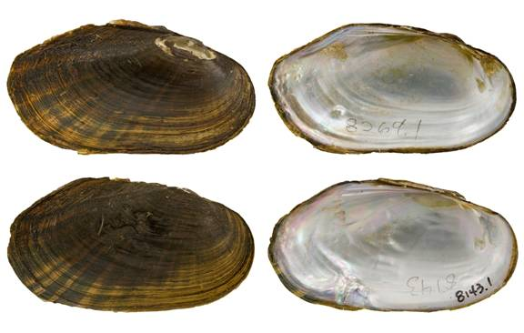

Sagittunio subrostrata (Say, 1831)
Pondmussel

Sagittunio subrostrata – top image, female, Forsythe Creek [Neches River drainage], length 54.5 mm; bottom image, male, Sandy Creek [Neches River drainage], length 55.5 mm.
Identification
Shell structure: moderately thin, somewhat inflated.
Shell outline: elliptical; may have a very slight dorsal wing posterior to the umbo.
Posterior ridge: rounded.
Shell color: greenish-yellow, yellowish-brown, brown or black; surface dull to glossy.
Rays: broken or wavy, green or black rays of variable widths, which cover the entire shell. Rays are usually darkest and most distinct on the posterior portion of the shell and become obscure with age.
Shell texture: without sculpture.
Umbo: low, broad, elevated slightly above the hinge line; umbo cavity shallow to moderately deep.
Umbo sculpture: absent or double-looped or v-shaped ridges.
Pseudocardinal teeth: triangular, erect, thin, and compressed, 2 teeth in left valve, anterior tooth larger than posterior, both teeth parallel to the hinge line, 1 tooth in the right valve.
Lateral teeth: long, thin, straight to slightly curved, 2 in left valve, 1 in right valve.
Interdentum: long and very narrow or nearly absent.
Nacre: blueish-white or white, may show brassy blotches; iridescent posteriorly.
Other: sexually dimorphic, posterior margin obliquely truncate in females, centrally pointed in males; females tend to be more inflated posteriorly than males.
General range
Mississippi River basin from Louisiana north to Minnesota and west to Kansas and South Dakota. Lower portions of the Ohio, Tennessee and Cumberland drainages. Gulf Coast drainages from the Nueces River drainage of Texas to the Mobile River basin.
Habitat
Streams to rivers, where it can invade headwater systems but is rarely in large river systems. Can also inhabit natural and artificial ponds, lakes, reservoirs, and canals. In riverine habitat typically occurs in backwaters, pools, sloughs, and oxbows in little to no current in substrates of mud or sand.
Legal listing status
USFWS: None